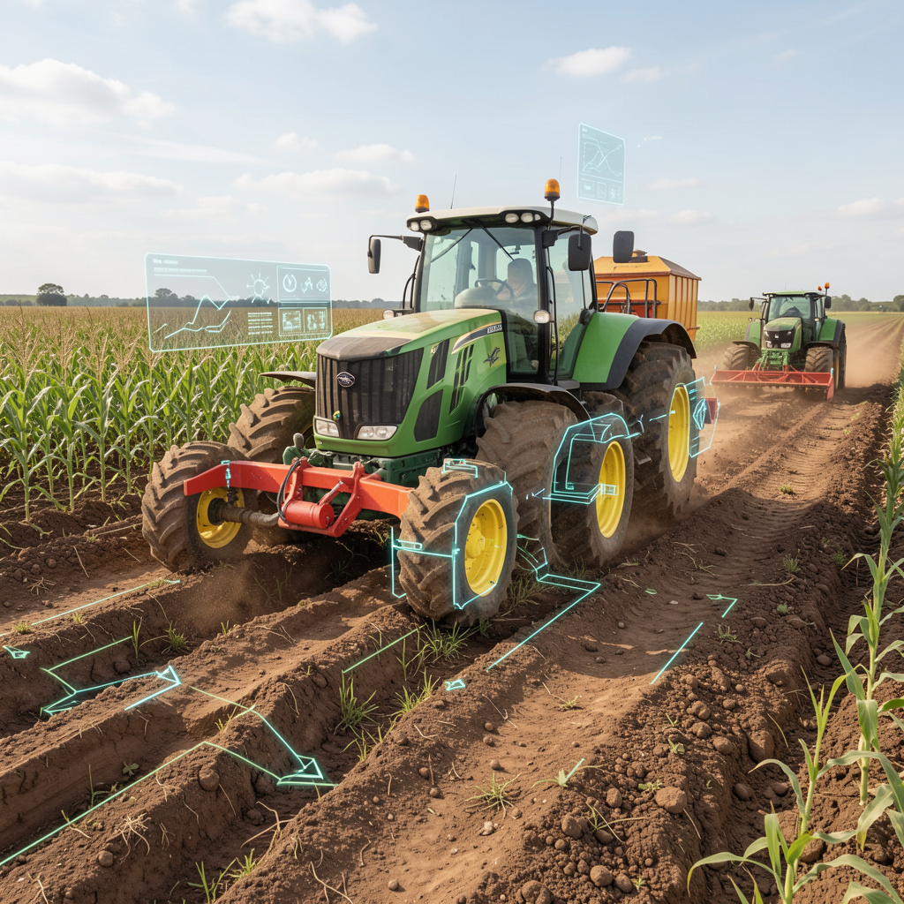
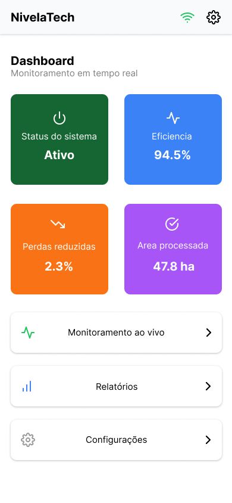
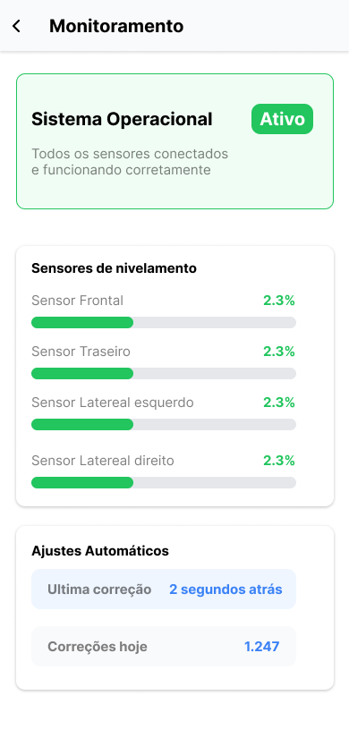
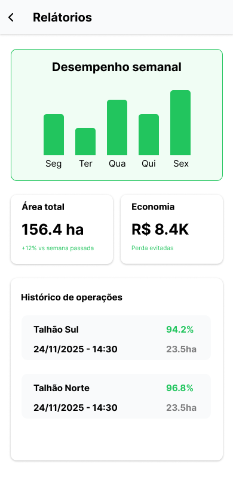

AgTech • Agricultura Inteligente
O NivelaTech utiliza sensores e automação para adaptar implementos agrícolas automaticamente ao terreno, reduzindo perdas e aumentando a eficiência no campo.
Eficiência
+18%
Nivelamento
92%
Perda estimada
-12%
Terreno
Irregular
Terrenos irregulares fazem com que colheitadeiras e plantadeiras não acompanhem corretamente o solo, gerando perdas significativas durante a operação.
Parte da colheita acaba ficando no solo devido ao mau nivelamento.
Operadores precisam compensar manualmente falhas do equipamento.
Sistemas automáticos estão disponíveis apenas em máquinas novas.
Um kit inteligente de sensores e atuadores que permite que implementos agrícolas se adaptem automaticamente às irregularidades do terreno em tempo real.




Seu feedback é essencial para entendermos melhor as necessidades do campo.